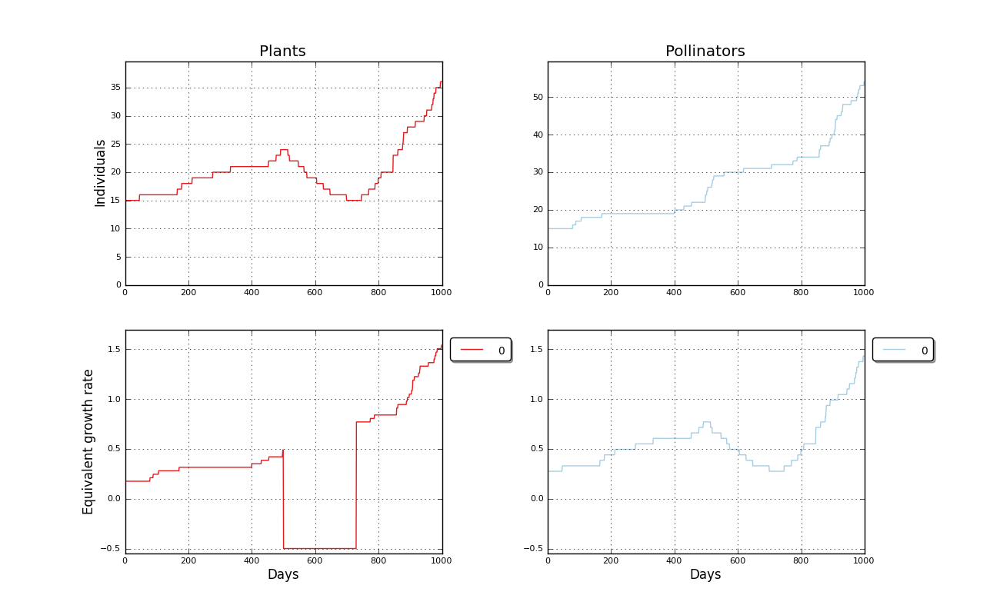

Binomial simulated mutualistic interaction. Input file: 1x1dat   days: 1000<br>============================================================================<br>Mutualist interactions enabled<br><br>Plants matrix: <a href='../input/1x1dat_a.txt' target=_BLANK>1x1dat_a.txt<a><br>Pollinators matrix: <a href='../input/1x1dat_b.txt' target=_BLANK>1x1dat_b.txt<a><br>Plant species: 1<br>Plant initial populations [15]<br>Pollinator species: 1<br>Pollinator initial populations [15]<br>Forced extinctions. Plants species [0], period (years): 1, numperiods: 1, spike: 1.00, rate: -0.500, start: 500<br>Elapsed time 0.09 s<br><br>Created 2012-07-07 19:21:55.890000<br><br><br>Populations evolution picture<br><table border=0><tr><td></td></tr></table><P>